ReDD: Block/remove
Block or remove distractions
Block access
If particular websites or apps distract you, try blocking your access to them for some time or after a certain amount of time has passed.
Laptop
Many browser extensions allow you to block websites. Discover these by searching through the web stores for extensions for the web browser you use:
The most popular website blocker for Chrome is Block Site - Website Blocker for Chrome™: 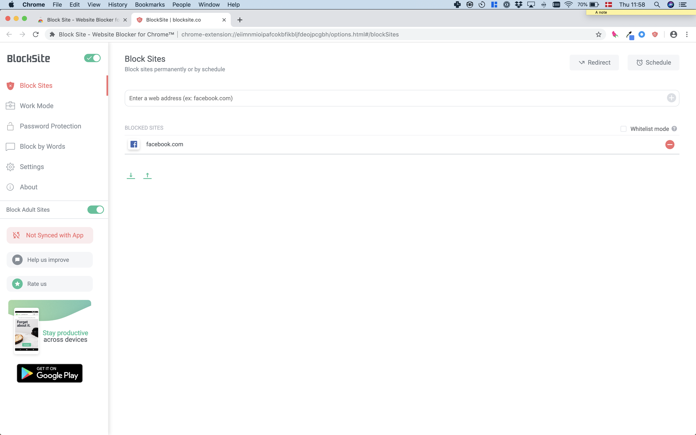
On Safari, try Roadblock:
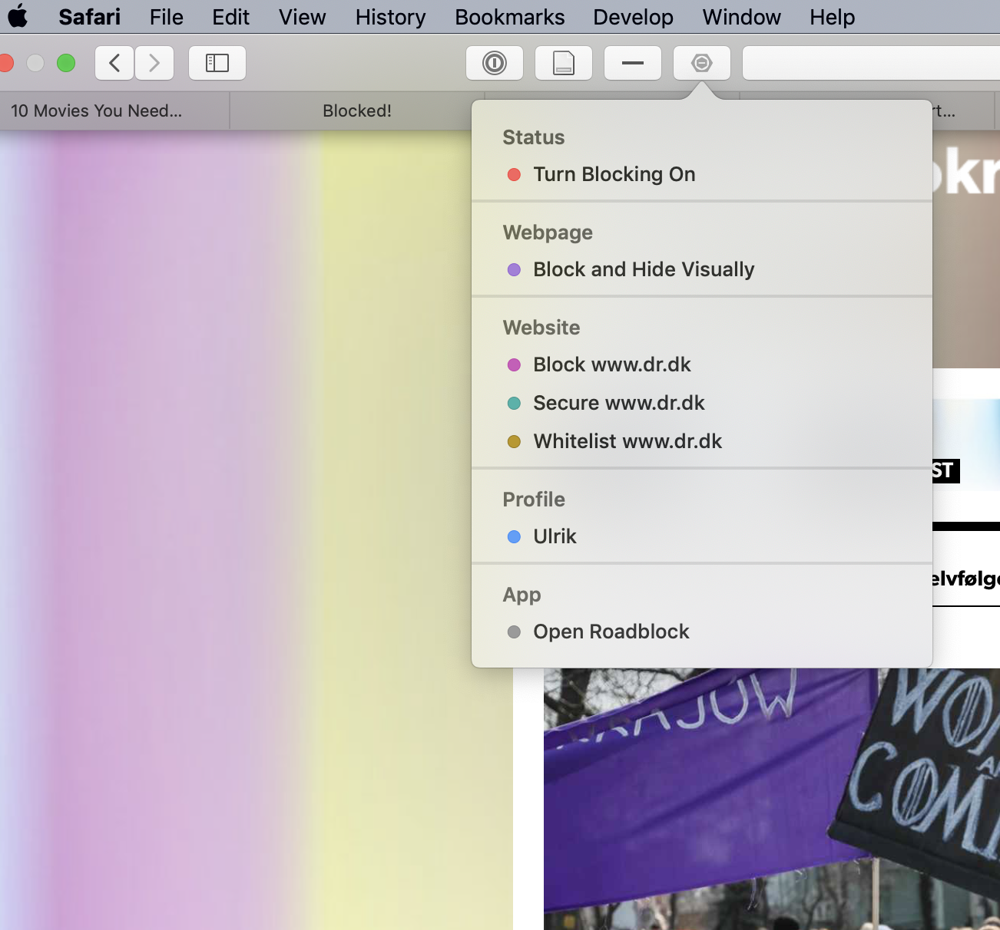
Smartphone
On Android, one of the most popular app blockers is Stay Focused:
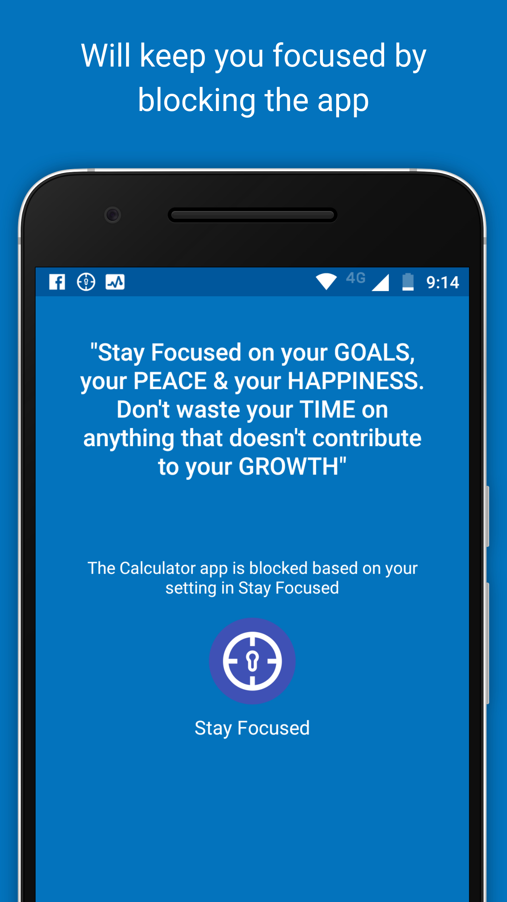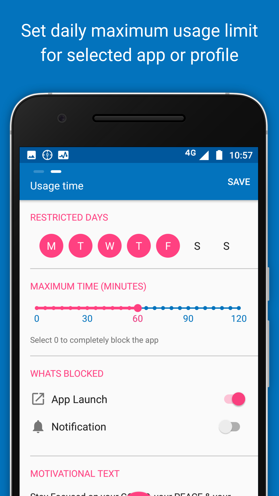
On iOS, use Apple’s built-in app Screen Time to block your own access to particular apps.
You can do so in two ways:
- Restrict category of apps: Go to Settings -> Screen Time -> App Limits. iOS will ask you to pick an entire category of apps to apply a time restriction to.
- Restrict specific app: Go to Settings -> Screen Time. Find the app in the list of “Most Used” and tap it. You’ll see an “add limit” option near the bottom of the following screen.
Remove features
On laptop, use browser extensions to remove features of websites you find distracting.
You can use extensions to remove Facebook’s newsfeed.
On Chrome, try News Feed Eradicator.
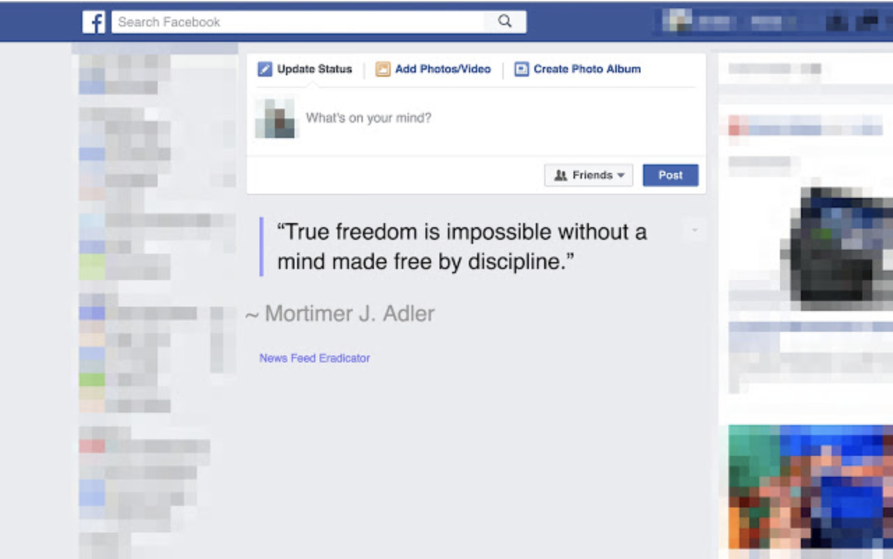
On Safari, try Newsfeed Blocker for Facebook.
You can also use extensions to remove numerical metrics on Facebook:
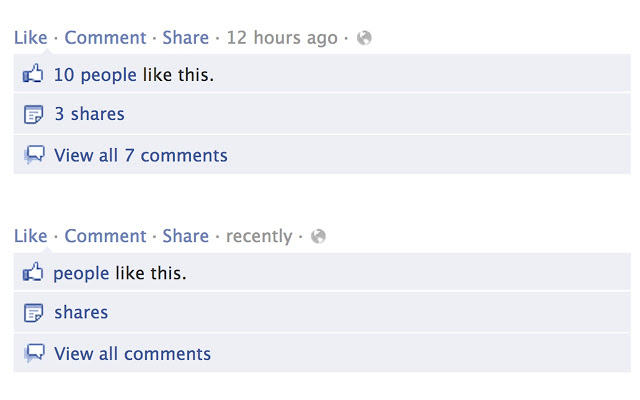
Find installation instructions here.
YouTube
On Safari, remove recommended videos from YouTube with the Distraction Blocker for YouTube):
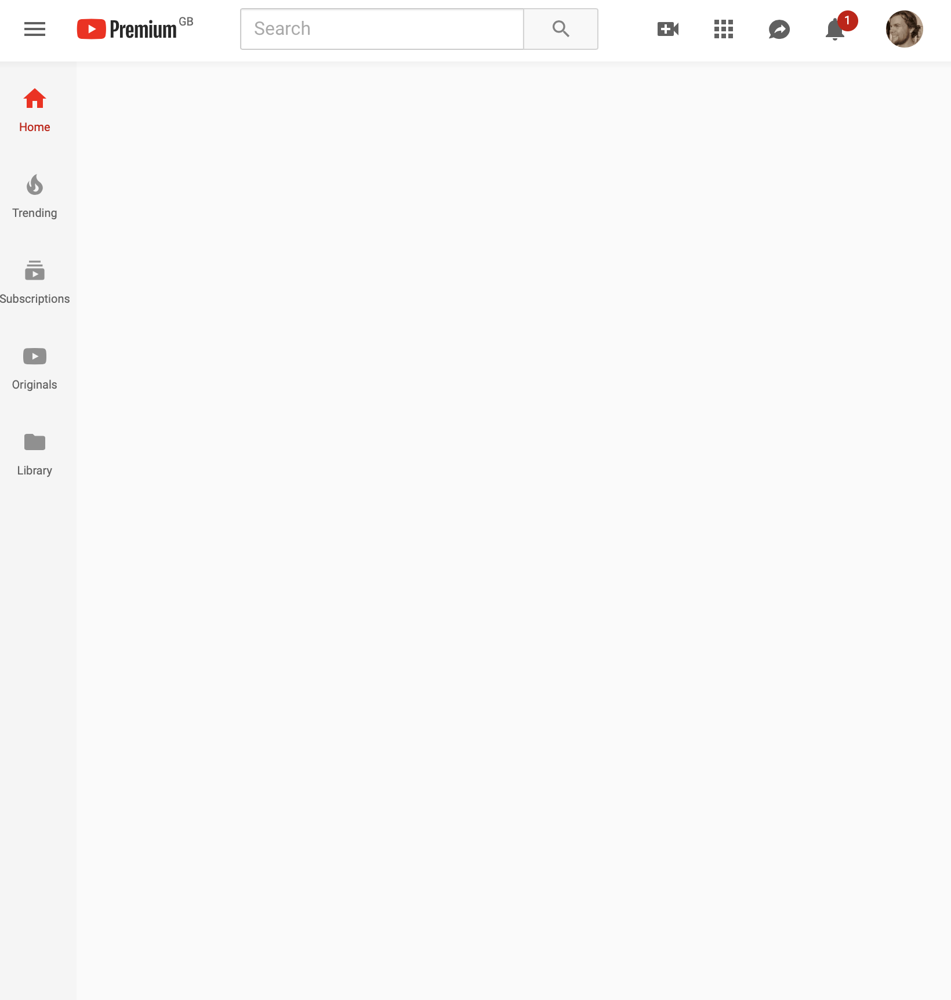
Gmail
If you use Gmail in a browser, Inbox When Ready hides your inbox by default, until you deliberately click that you wish to see it:
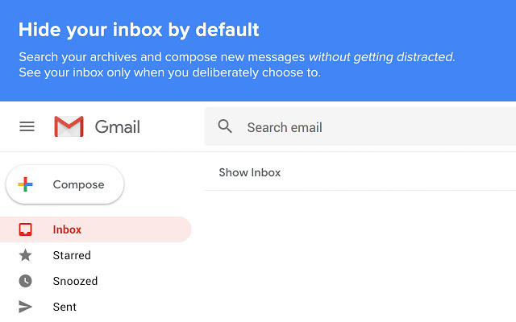
Anything
On Chrome, the extension Click to Remove Element allows you to remove elements from any website with a single click:
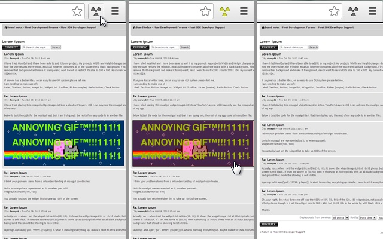
Search through the browser extension stores for a similar extension which might be useful to you:
Minimal writing tools
When you try to focus on writing, consider getting all distractions out of the way.
Laptop
If you use Google Docs there are browser extensions to make the interface super minimalistic, for example DistractionFree for Safari:
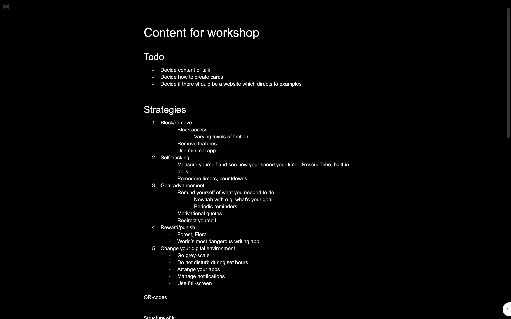
Microsoft Word also includes a minimalistic ‘Focus’ mode:
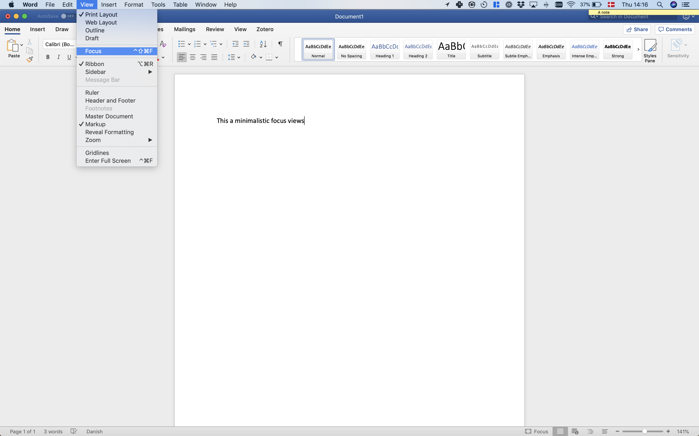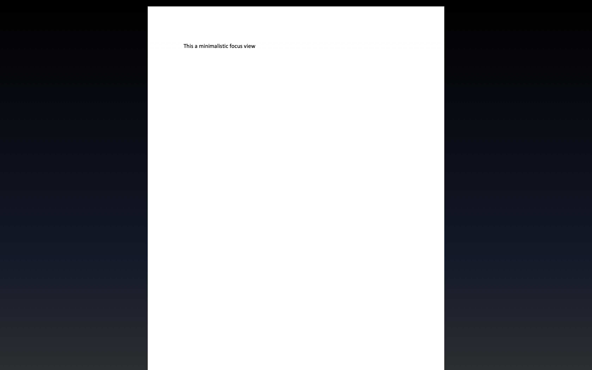

Go monotasking / dumbphone
A few tools can force your devices into ‘monotasking’ mode.
Laptop
Cold Turkey Writer allows you to turn your laptop into a typewriter until you’ve typed a specific number of words, or for a specific length of time:
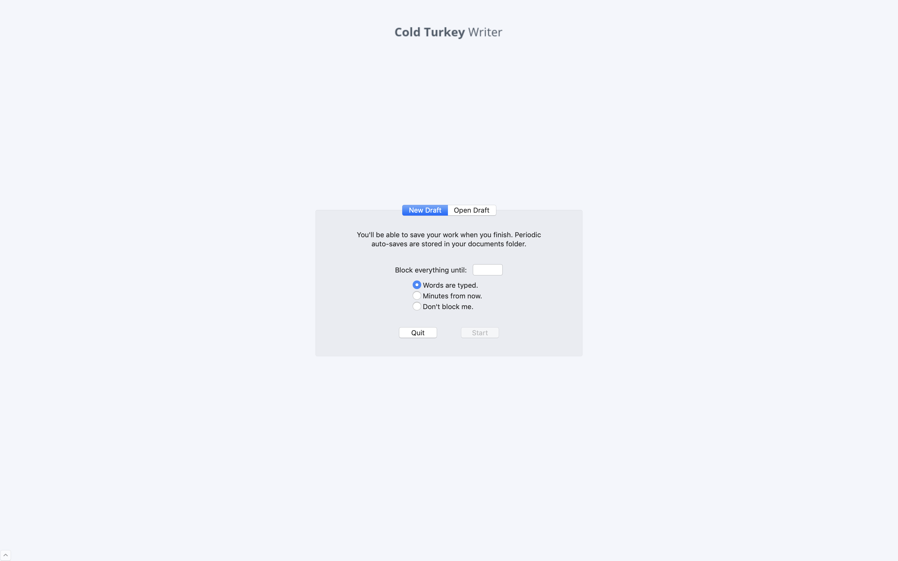
Smartphone
On Android, simulate a similar situation with the app Dumbphone:
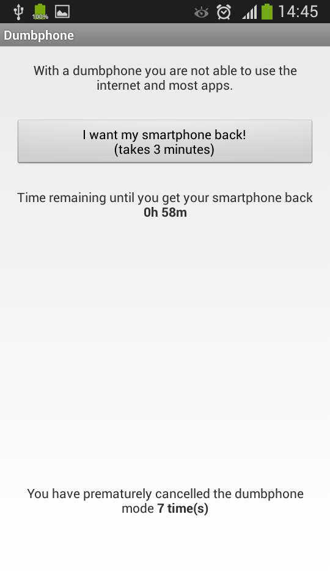
On iOS, get the same effect using Screen Time‘s ’Downtime’ feature. When ‘Downtime’ is scheduled, only phone calls and apps that you choose to allow are available:
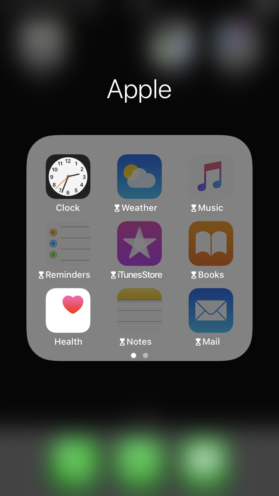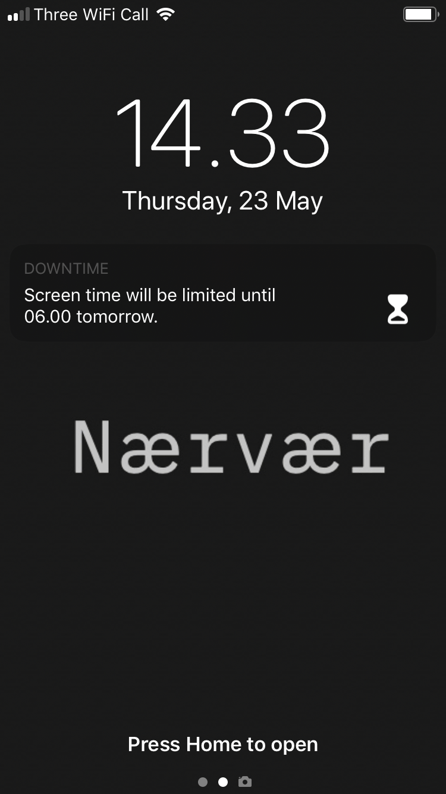